| No | Nama Alat | Gambar | Deskripsi |
|---|---|---|---|
| 1 | Kertas Watercolor 300gsm | 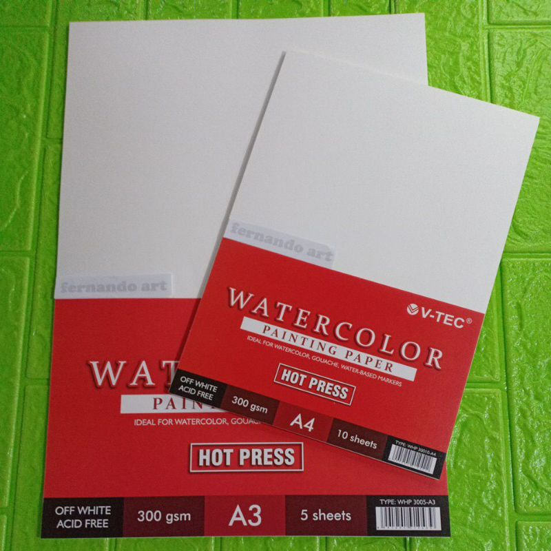 | Kertas tipe ini digunakan sebagai media lukis karena mampu menyerap air tanpa mudah melengkung. |
| 2 | Kuas Watercolor | 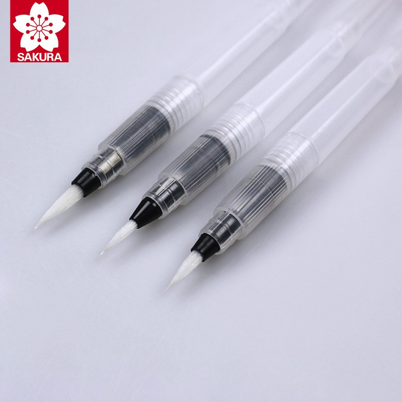 | Kuas digunakan untuk mengaplikasikan cat air dengan berbagai teknik. |
| 3 | Pallet | 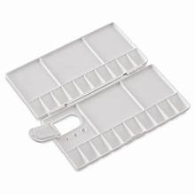 | Palet berfungsi sebagai wadah mencampur warna cat air. |
| 4 | Cat Air | 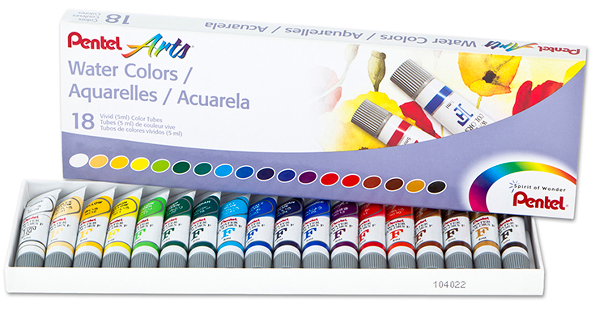 | Cat air digunakan sebagai pigmen untuk melukis dengan efek transparan dan gradasi. |
| 5 | Pensil | 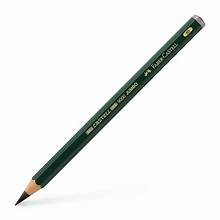 | Pensil digunakan untuk membuat sketsa awal. |
| 6 | Penghapus | 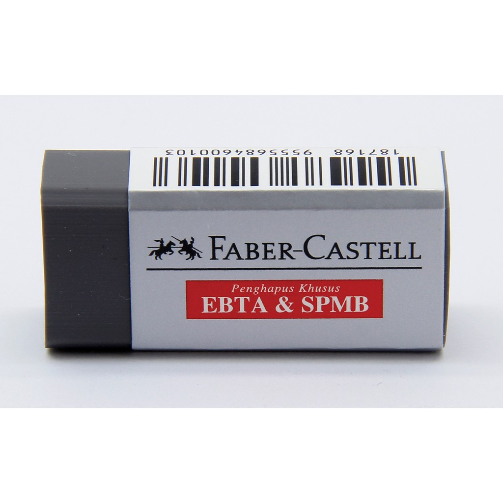 | Penghapus digunakan untuk mengoreksi sketsa awal. |
| No | Nama Alat | Gambar | Deskripsi |
|---|---|---|---|
| 1 | Tape Khusus Watercolor | 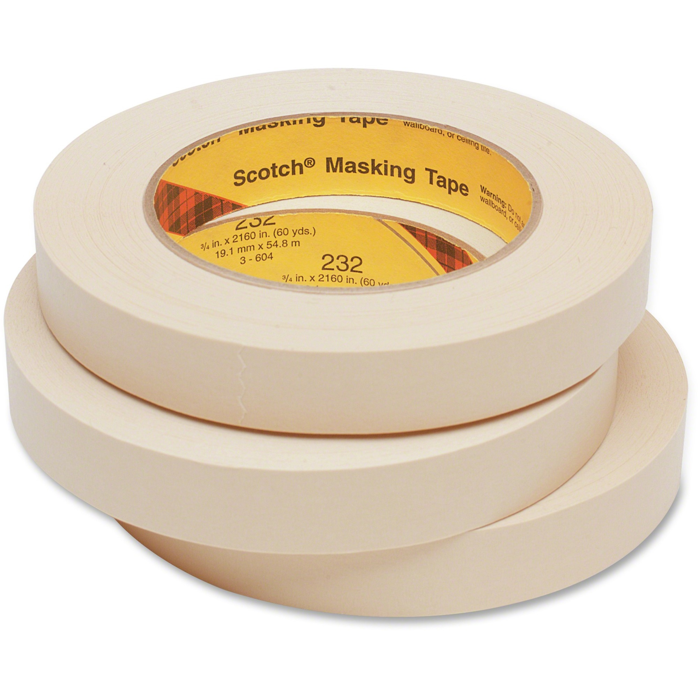 | Tape ini untuk menutup bagian kertas yang tidak ingin terkena cat tanpa merusak keadaan kertas. |
| 2 | Color Pallete Wheel | 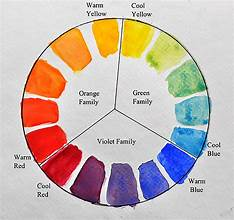 | Membantu dalam penentuan warna agak lukisan terlihat kontras. |
| 3 | Tissue | 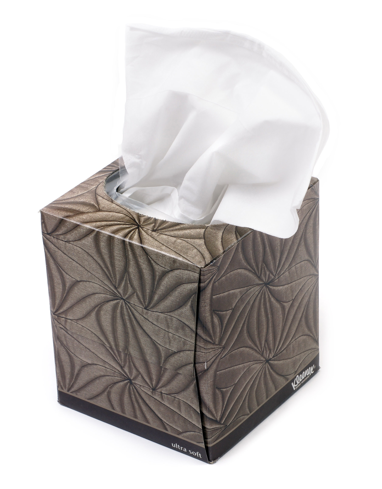 | Untuk membersihkan kuas, membersihkan palet, serta membantu membersihkan cat yang kelebihan air. |
| No | Nama Alat | Gambar | Deskripsi |
|---|---|---|---|
| 1 | dry on dry | 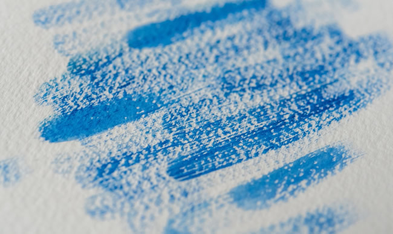 | Teknik mengaplikasikan kuas kering dengan sedikit cat langsung ke kertas kering. |
| 2 | wet on wet | 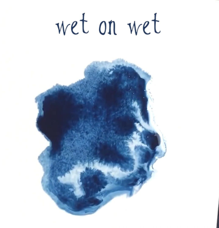 | Teknik mengaplikasikan kuas basah dengan cat langsung ke kertas basah. |
| 3 | wet on dry | 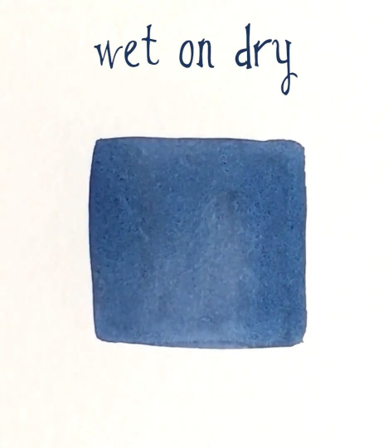 | Teknik mengaplikasikan kuas basah dengan cat langsung ke kertas kering. |